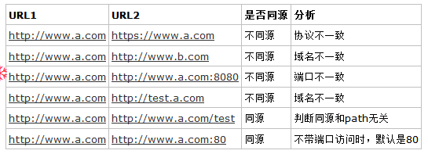

同源策略
在说跨域之前，我们需要先了解下 同源策略。它是一个规范（Netscape 1995年提出），并没有指定具体的使用范围和实现方式。
为了保证使用者信息的安全，防止恶意网站篡改用户数据，一些常见的Web技术都默认采用了同源策略（如Silverlight, Flash, XMLHttpRequest, Dom等）。
那如何判断同源呢？
- 相同的协议
- 相同的域名
- 相同的的端口号
我们用一个表格来展示同源的判断：

如果不是同源会有哪些使用限制呢？
- Cookie，WebStorage(LocalStorage, SessionStorage)，Cache(Application Cache, CacheStorage),Web DB(WebSql IndexDB)等都无法共享
- 无法彼此操作各自的DOM（Iframe）
- 无法发送Ajax请求
- 其他
注意：如果两个站点，具有相同的一级域名（如 www.a.com, test.a.com，一级域名都是a.com），那么可以通过各自设置document.domain='a.com' 来共享Cookie。
注意2：如果是iframe非同源，虽然不能操作dom，但是能操作location.href。
什么是跨域？
通过以上内容，我们了解到了什么是同源策略，以及怎么判断同源。那么与之相反，如果不满足同源，则就是跨域。
在浏览器上，如果访问跨域资源，将会有诸多限制（为了安全），参考上面的同源限制。
注意：跨域限制是浏览器的机制，如果直接在服务端请求，是不会触发跨域限制的。
那些我们遇到的跨域
1、图片跨域
对于图片来说，大部分场景是不需要处理跨域限制的，因为一般来说，图片没有跨域限制。
在也有例外，如果在 Canvas 中操作跨域的图片，那么就会触发跨域限制。解决办法是在返回图片的时候，添加 Access-Control-Allow-Origin: orign | '*' 来允许跨域。
2、Iframe跨域
这个也不太常见，如果网站本身和iframe嵌入的站点都是我们自己可以控制的，那么应直接使用 postMessage 来通信。如果浏览器较旧，不支持 postMessage ，可以考虑通过window.name来传递数据。
window.name 传递数据原理
首先在iframe访问跨域的站点，这个站点，将数据写入到window.name中。
然后主站点，修改iframe的location.href='about:blank' 或其他不跨域的站点。
最后通过window.name获取数据
这是因为同一个iframe的window.name是相互共享的。在现代浏览器中，该方式可能会失效，此时请使用 postMessage。
3、字体跨域
跨域使用字体文件，也会触发拦截。这个的解决办法和图片跨域一致，后端设置CORS头部即可。
4、Ajax跨域
这是我们经常会遇到的跨域问题，由于现在流行的开发模式，很多时候我们都需要处理这类型的跨域。
如何判断Ajax跨域
当我们在访问一个Ajax请求，控制台出现如下错误时，我们基本可以判断，是被跨域拦截了：
XMLHttpRequest cannot load xxxxx. No 'Access-Control-Allow-Origin' header is present on the requested resource.
很多时候，我们的API和Web并不在一个站点上（多个域名），而我们又必须要跨域访问。这个时候我们就需要想办法实现跨域资源访问。
以下，我们就来看看如何实现跨域资源访问：
CORS（跨域资源访问）- 标准做法，强烈推荐
开发模式的演进，导致我们很多的应用都是跨域访问。这个时候CORS规范也就应运而生了。使用它，我们可以直接对跨域资源进行访问，了解更多，请参考CORS详解。
该方式的核心是通过和后端API协商，看是否允许跨域访问。对于满足某些条件的请求，会先发送一个预请求。简单请求，也需要服务器允许跨域访问。
最关键的的几个响应头如下：
- Access-Control-Allow-Origin: origin | '*' 允许某个指定的域访问，*表示不限制域。
- Access-Control-Allow-Methods: 'GET,POST,PUT,DELETE' 允许哪些类型的请求
- Access-Control-Allow-Headers: 'x-token' 允许的自定义Header。
注意：该方式由服务端设置，前端无需设置，也无法设置。只要服务端处理好了，前端不需要做任何处理即可使用。
反向代理（将跨域代理为同域，绕过）
既然跨域有限制，那么我们可以考虑将跨域变成同域，这样不就没有限制了么？
以 Nginx 为例，我们只需要将特定路径的请求转发给真正的后端API即可：
server {
listen 8101;
root /dist;
index index.html;
location ~* \.(eot|ttf|woff|woff2)$ {
add_header x-server $server_addr;
add_header Access-Control-Allow-Origin '*';
}
location ^~ /api/v1 {
proxy_pass http://apis.xxx.com/api/v1;
}
}
注意：该方式需要在部署的时候做处理，前端需要修改请求api的地址为同域。
服务端转发（通过不跨域的请求跨域API，绕过）
该方式，通过请求不跨域的api，然后在api中再呼叫真实的跨域api，由于是服务端请求，所以也就避开了跨域问题。整体看来，这种方式有点多此一举，不过如果把这个转发由统一的程序进行处理，还是挺不错的。
注意：该方式在后端API中处理，前端需要修改请求api地址为同域。
JSONP（利用script无跨域限制，绕过）
该方式利用Script请求资源不会触发跨域限制这个特点来实现。JSON原理，请参考JSONP详解。
注意：该方式需要前后端搭配，后端需要支持JSONP请求，前端需要采用JSONP的方式去请求数据。
注意2：该方式由于实现原理限制，只能处理GET请求。
综上，遇到跨域请求，就先去找后端啊。前端真的独自搞不定啊。
总结：跨域是项目开发中，非常常见的问题。就算是前端开发，也一定要理解跨域，了解跨域的处理方案。以便于能够真正的处理好开发任务（或许，这样和后端交(Si)流(Bi)也更有底气）。